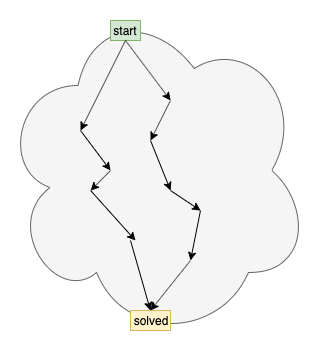

I use the phrase “everything but the kitchen sink” as an analogy.
In my words, the phrase means trying to do everything at once instead of partitioning the work.
Emacs is everything but the kitchen sink.
Most PLs are everything but the kitchen sinks.
IMO, everything is a fractal. Everything can be subdivided into smaller pieces.
IMO, programming tasks should be subdivided into smaller pieces.1
I argue that we can strip relational programming down to its basics and that this will help us create code that creates code that …
The basics of relational programming are:
Everything else is added, unnecessary, complexity.
We already know how to express both basics: (a) as loops of loops (but, the syntax is horrible) and (b) functions of exactly two arguments (not 0, not 1, not more than 2).
PROLOG, also, suggests a concise, human-readable, syntax for exhaustive search.
The easiest introduction to PROLOG that I have encountered is Nils Holm’s “Prolog Control in Six Slides”.
[In “Ohm in Small Steps”, I show one way to transpile Holm’s Scheme code to Javascript. The transpiler should port easily to other output languages that support anonymous functions.]
In “Everything is a Fractal”, I mention relational programming.
My interest is in finding the atom of software.
Many languages have been invented, and each one purports to be The Answer (to software development).
Projectional editing consists of research into creating different views on code.
I believe that if we had an atom of software, we could create multiple views on the code (and the data) and we could create multiple languages for the same code and data. We could re-skin code at will.
I call such skins “SCNs” - Solution Centric Notations.2
I — currently — believe that triples are the ATOM of code and that relational programming shows us how to write low-level code and data in triple format.
In my words, an Atom is the smallest indivisible sub-part of a system.
In my view, everything is a fractal, so I believe that Atoms can be further subdivided.
From this perspective, an Atom is only meaningful in terms of a solution. An Atom is a point where the Architect / Engineer chose (v: to choose) to quit subdividing a sub-problem and chose to implement the solution to the sub-problem.
[Corollary: Different Architects might choose different sets of Atoms.]
Assembler is a triple-based language.
For example MOV R1, R0 is a triple (!).
Techniques have been devised to write code that writes code, given assembler. Such techniques have been buried in compiler technology literature. I think that such tools and techniques need to be brought out and made available to all programmers, not just compiler-writers.
It is much easier to write code that writes code when the input has been normalized to triple form.
Some compiler technologies have leaked out to mortal programmers — e.g. REGEX.
Most compiler technology, though, remains shrouded in mystery.
Most programmers recognize and use the technology called gcc, but few know that it is based on early compiler peepholing techniques explored by Fraser and Davidson. That technology is called RTL.
Technologies, that look similarly useful, include Cordy’s OCG and Holt’s Data Descriptors. Holt’s/Cordy’s/Wortman’s S/SL is a forerunner to PEG-like technologies.
I believe that compiler parsing technologies are ripe for picking — e.g. PEG — and for making available to mortal programmers. Such technology needs to be REGEX’ed.
Since inventing assembler, we (the royal we) have found utility in inventing 1st-class functions, and, garbage collection, and, relational programming, and, …
Is there a triple-like notation that employs 1st-class functions and garbage collection? Early Lisp3 was an early form of this kind of thing. Relational Programming might give us some clues. OO and FP might give us clues. Closures and anonymous functions (found in Lisp, and more recent languages like JavaScript and Python) give us clues. Hierachical filesystems might give us a clue.
Of course, assembler can do any of the above, but it needs to be skinned for human readability and complexity management.
I favour the use of toolbox languages for building skins. Are there a toolbox languages that make building skins — SCNs — easier than using assembler?
We (the royal we) have spent a great deal of effort developing language skins aimed at human readability, and we have not spent much effort on developing languages for machine readability (Rebol and TXL are different takes on this subject).
Note that I do not believe that the ATOM will result in human-readable code.
I want to write code that writes code.
Machine-readable is “better” than human-readable code, if one is trying to write code that writes code.
In another essay, I discuss FDD — Failure Driven Design.
When software works, we abandon it (“release” it).
When software doesn’t work, we work on it.
Most of the time, we work on failed code (design, code, etc.).
Relational programming ties in with FDD as one of the possible technologies for writing code that writes code.
The current forms of relational programming — PROLOG and miniKanren — have nothing missing.
I believe that relational programming languages encourage the use of too much detail.
Details kill.
A programming language, to be useful, needs to elide details (but not ignore them).
No language can be The One Language to Rule Them All.
We need a multiple skins — SCLs — that help us elide details in a problem-specific way.
The good part of relational programming is the notion that pattern-matching can be done automatically and under-the-hood.
The bad parts of relational programming are everything else.
For example, I would rather use printf to format output strings than trying to fit formatting into the relational paradigm (it is possible, but it is not pretty).
Relational programming should stick to triples only. Functors that have more than 2 arguments should not be used. (In fact, functors that have 0 or 1 arguments are questionable, too).
The latest crop of FP (functional programming) skins use pattern matching.
This technology was invented and explored in the 1960’s under the name of parsers.
Is FP the modern manifestation of pattern matching?
To use FP, you have to expunge time.
That’s a big hit.
FP, also, is based on a very old skin called mathematics. Mathematics was invented when all that we had was paper (and pencils and pens). We can build 2D skins using computers. We can build 3D skins using 3D printers (we can model 3D skins using CAD software).
IMO, PEG is the modern manifestation of pattern matching.
You can keep f(t) using parsers and PEG.
In fact, S/SL showed how to build f(t) processors.
(One can use pipelines to chain FP beads together into f(t) handlers).
We (the royal we) invented isolation in the form of UNIX® processes and pipelines.
Then, we threw such isolation away and settled for encapsulation in the form of OO, etc.
We now know that encapsulation is not enough — we cannot bolt programs together in a care-free manner using only encapsulation.
We want to build-and-forget programs. We need to expunge inter-program dependencies. In other words, we want isolation.
Worse, yet, our present-day hardware creates dynamic dependency chains under-the-hood.
Our hardware just about forces us to produce CALL/RETURN Spaghetti.
Relational programming (and FP) gives us a way to talk about solutions that create no dependency chains.
Is that enough? No. But it’s a start.
Do we already have all of the pieces and Atoms that we need to propel programming into the future? Maybe.
Languages are skins.
I have a cavalier attitude towards languages, because I know that we can build notations (languages) in only a few hours.
I view notations like a bowl of candy sprinkles. Sprinkle several notations on every problem, to make the solution simpler to express, and, to program.
The key to writing code that writes code is to cleave “Programming Languages” into two camps (maybe more, recursively):
Programming Languages for Machines can lead to code that writes code, to projectional editing, etc.
A lot of techniques for writing code that writes code were explored in the early days of computing, under the name of compiler technologies.
Lisp macros are another manifestation of such technology.
[The problem with Lisp macros is that we tried to include compiler technology into the skins. This raised the (accidental) complexity of the problem. Combining technologies — flattening them — is almost always a bad idea.]
The point of programming is to automate processes, using a computer.
All technologies for programming should strive to answer the question of how to automate a process using a computer.
Many programmers feel that the “best” way to automate processes is to delve into all of the details in excruciating detail, in a non-hierarchical (flat) manner.
Language theories and skins for “proving” language designs.
We have seen progress on this front, but, it is obvious that this does not result in programming skins that are accessible to mortal programmers.
Language theory provides a solid description of the universe of programming languages, but, tends not to address the problems of finding expressible versions of skins that are “walks” through the universe.
 Fig. 1 Walks Through The Language Universe
Relational programming is (but) one manifestation of language theory.
Making something simpler is usually begun by starting out simple instead of by adding complexity.4
To make language theory, and relational programming, useful to mortal programmers, we (the royal we) need to throw stuff out.
I suggest that we remove just about everything from relational programming, and leave only triples.
Peter Lee’s book “Realistic Compiler Generation” shows how he managed an overtly complex technology — Denotational Semantics — by chopping it up into pieces, and pipelining the pieces.
Further work on this idea was performed by Uwe Pleban.
There is no need to devolve all of computing to the expression of Natural Numbers. Except in theoretical expressions of the Universe of Programming.
The goal of creating useful skins is to build a Component using hierarchies of isolated components and finding notations for the input and the output of each subdivision.
“Realistic Compiler Generation” shows but one set of possible skins for expressing denotational semantics in a useful form.
Engineering is not coding.
Implementation is coding.
Engineering is the process of defining the details that lie between the Architecture and the Implementation.
As such, relational programming might lead to a skin(s) for expressing engineering concerns (in a hierarchical — divide-and-conquer — manner, composing isolated components together into a solution).
Complete Rigour is certainly something to strive for, but, complete rigor is not necessary for delivering product.
In fact, if we’d waited for theoretically complete rigour, we would not have an electronics industry.5
Re-using what we’ve learned from various forms of Engineering — Civil, Structural, etc. Engineering — we see that we can deliver products without having an overall rigorous theory for the given domain.
My first full-time job was as a Software Test Engineer with Mitel Corp.
Mitel is a Telecom company (like Bell and NorTel, etc.). At the time, all Telecoms professed the four-nines principle — 99.99% uptime. People would telephone each other during power failures and not even notice that the telephone networks were still working, although the power grid had failed.
All of this was done with early computing technologies, and with software written in assembler and early programming languages — long before the advent of FP, Haskell, etc.
Testing. Most theorists look down on testing, but, testing can be used to create useful, and, saleable, and, guarantee-able products. To deliver products using only testing instead of rigorous theories, one needs to apply many layers of testing. CI/CD is only one form of testing (regression testing). Mitel used, at least, automated testing, analogue testing, back-to-back testing, trace analysis testing, etc., etc.
For Telecoms, and for current companies, rigorous theories can only serve to cost-reduce products by reducing testing costs (while increasing development costs and narrowing the kinds of programmers that can perform development tasks).
Can theories provide order-of-magnitude benefits, like PEG vs. YACC? Maybe, but, we are still waiting.
Relations make parsing diagrams “easy”.
Parsing a diagram consists of:
For example, a rectangle can be described as:
To do this, we need:
Step (2) converts the editor output into relational triples — a factbase.
Step (3) uses relational programming — e.g. PROLOG or miniKanren — to infer information about the diagram and the programming conventions.
Using modern-day computers, we can expend CPU power to perform step (3) at runtime, saving head-scratching during design- and compile- times.
[Q: Why do I champion triples instead of structured forms? A: Triples are more easily machine-readable than more elaborate data structures.]7
https://guitarvydas.github.io/2021/03/23/Everything-is-a-Fractal.html
https://www.youtube.com/channel/UC2bdO9l84VWGlRdeNy50fIg
https://guitarvydas.github.io/2021/01/17/Factbases.html
https://guitarvydas.github.io/2021/03/16/Triples.html
https://guitarvydas.github.io/2020/12/09/Programming-Languages-Are-Skins.html
https://guitarvydas.github.io/2021/04/10/SCN.html
https://guitarvydas.github.io/2020/12/09/DSL-Manifesto.html
https://www.researchgate.net/publication/220404697_The_Design_and_Application_of_a_Retargetable_Peephole_Optimizer
https://guitarvydas.github.io/2020/12/27/PEG.html
https://guitarvydas.github.io/2021/03/17/PEG-vs.-Other-Pattern-Matchers.html
https://guitarvydas.github.io/2021/03/24/REGEX-vs-PEG.html
https://guitarvydas.github.io/2021/04/02/PEG-Cheat-Sheet.html
Ohm-JS (PEG for Javascript):
https://guitarvydas.github.io/2020/12/09/OhmInSmallSteps.html
https://github.com/harc/ohm
PEG for Lisp: https://guitarvydas.github.io/2021/03/19/Racket-PEG.html
https://scymtym.github.io/esrap/
PEG for JS: https://pegjs.org/
Thesis, etc.:
https://bford.info/packrat/
Note: I believe that the Ohm Editor is a breakthrough tool: https://ohmlang.github.io/editor/
[The Ohm Editor is an IDE for rapidly debugging PEG pattern-matching specs (aka grammars)]
What I do with Ohm-JS:
https://books.google.ca/books?id=X0OaMQEACAAJ&dq=bibliogroup:%22University+of+Toronto+Computer+Systems+Research+Institute+Technical+Report+CSRI%22&hl=en&sa=X&ved=2ahUKEwig1Legm8bqAhWvlHIEHYzzBYEQ6AEwBHoECAEQAQs
https://research.cs.queensu.ca/home/cordy/pub/downloads/ssl/
https://dl.acm.org/doi/abs/10.1145/24039.24051
http://minikanren.org/
(must see, if you haven’t already heard about Barliman: https://www.youtube.com/watch?v=er_lLvkklsk (https://github.com/webyrd/Barliman))
https://www.youtube.com/watch?v=QOYAHoLiyg0&t=199s
modern PROLOG: https://www.swi-prolog.org/
(gprolog uses WAM: http://www.gprolog.org/)
(beginnings of a WAM: https://github.com/guitarvydas/wam)
(WAM tutorial: http://wambook.sourceforge.net/)
https://guitarvydas.github.io/2021/04/11/Compiling-Diagrams.html
https://guitarvydas.github.io/2021/01/16/Transpiling-Diagrams-to-Code-101.html
https://guitarvydas.github.io/2021/01/24/Compiling-Diagrams-2.html
https://guitarvydas.github.io/2021/03/16/component-diagrams.html
https://guitarvydas.github.io/2021/01/12/Transpiling-Diagrams-to-Code-101.html
https://guitarvydas.github.io/2021/01/10/Transpiling-Diagrams-Overview.html
https://guitarvydas.github.io/2020/12/09/Parsing-and-Compiling-Diagrams.html
https://guitarvydas.github.io/2020/12/09/Diagram-Based-Languages.html
https://guitarvydas.github.io/2020/12/09/Editor-for-Gratoms.html
https://guitarvydas.github.io/2021/03/16/Toolbox-Languages.html
https://www.txl.ca/
https://en.wikipedia.org/wiki/Rebol
http://www.rebol.com/
https://github.com/rebol/rebol
https://github.com/red/red/blob/master/README.md#red-programming-language
ASON https://altscript.com/
https://guitarvydas.github.io/2021/03/17/Details-Kill.html
https://guitarvydas.github.io/2020/12/09/Isolation.html
https://guitarvydas.github.io/2020/12/09/Scalability.html
https://guitarvydas.github.io/2020/12/09/Scalability-II.html
ALGOL Bottleneck: https://www.youtube.com/watch?v=NTdA4OljwVE
https://guitarvydas.github.io/2020/12/25/The-ALGOL-Bottleneck.html
The Stack: https://guitarvydas.github.io/2020/12/27/The-Stack-2.html
https://guitarvydas.github.io/2020/12/25/The-Stack.html
https://guitarvydas.github.io/2021/02/25/The-Stack-is-a-Global-Variable-(again).html
https://guitarvydas.github.io/2020/12/24/The-Stack-is-a-List.html
https://guitarvydas.github.io/2020/12/09/Type-Stacks.html
https://guitarvydas.github.io/2020/12/09/Two-Stacks-For-Every-Type.html
https://www.amazon.ca/Realistic-Compiler-Generation-Peter-Lee/dp/0262121417
https://www.youtube.com/watch?v=2uw2W0w5oU8
https://guitarvydas.github.io/2020/12/09/Efficiency.html
[essay to come, for now see examples]
https://guitarvydas.github.io/2021/04/11/Glue-Tool.html
https://guitarvydas.github.io/2021/03/16/Toolbox-Languages.html
https://guitarvydas.github.io/2020/12/09/CALL-RETURN-Spaghetti.html
see the essay “Failure Driven Development” on https://guitarvydas.github.io/
https://www.t3x.org/bits/prolog6.html
https://www.youtube.com/channel/UC2bdO9l84VWGlRdeNy50fIg
https://guitarvydas.github.io/2020/12/09/References.html
FBP (Flow-Based Programming, concurrency, diagrams)
noFlo
https://www.theidioms.com/everything-but-the-kitchen-sink/
Until the pieces are so small that they can be implemented in only a few hours. (Two weeks is too long – and indicates that more subdivision is necessary). ↩︎
I believe that SCNs are orders–of–magnitude cheaper to build than DSLs and PLs (Domain–Specific Languages and Programming Languages, resp.). I discuss this elsewhere (see appendix). ↩︎
But, then, Lisp was beat into the ground with complexity–hammers and became Common Lisp. ↩︎
Although simplication is a factor https://en.wikipedia.org/wiki/WilliamBushnellStout#:~:text=published%20in%201951.–,Legacy,Colin%20Chapman%20of%20Lotus%20Cars. Computers are “complex” to begin with. They need to be skinned to allow access to them by mere mortals. Simplication. Likewise, CPUs are complex and are simplicated (from various kinds of rust to ICs by electronics chip manufacturers) for use by programmers. ↩︎
Aside: Scientists like to talk about a TOE (a Theory of Everything), but, this will not be possible until Science can explain consciousness (among other factors) without hand–waving arguments like “emergent properties”. ↩︎
Most existing diagram editors are much too complex. Details kill. ↩︎
Machines can structure data for us, at runtime. I think of a continuum between compile–time and run–time. In fact, all software is interpreted, anyway (a CPU is an interpreter). The only question is “when does the interpretation happen?” ↩︎